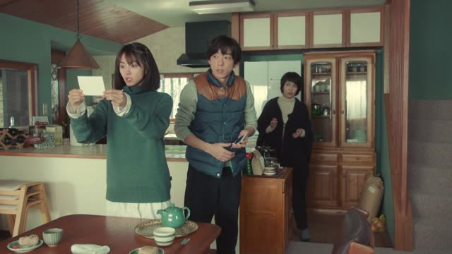

誰 (だれ)・どなた
| Polite | どなた |
|---|---|
| Casual | 誰 (だれ) |
Same meaning: "who". Only the politeness changes.

Shirokuma Cafe · Episode 8
このステキなアレンジメントはどなたが？
"Who [made] this lovely arrangement?"
誰 (だれ) means "who". どなた is the polite version, for customers, strangers and people above you.
It sits where the person would go in the answer, and keeps the same particle: 店長が作りました → どなたが？ On this card, the verb is simply dropped.
Casual: このアレンジメント、誰が作ったの？
Midnight Diner: Tokyo Stories · Season 2, Episode 8
誰？ あんた。
"Who are you?"
誰 is the casual word for "who", and どなた is the polite one. On this card, a stranger calls him by name, and he asks back: 誰？ あんた, "who (are) you?", with no です at all.
Quick Examples
A friend points at a photo on your phone.
この人、誰？
"Who's this?"
Between friends, just 誰. No です, no か.
CasualSomeone knocks on your door.
どなたですか？
"Who is it?"
どなた (the polite 誰) + です + か. どなた works like a noun, so です goes right after it.
PoliteThe last piece of cake is gone.
誰が食べたの？
"Who ate it?"
Asking who DID something: 誰が. Not 誰は.
CasualAn umbrella is left in the office.
これは誰の傘ですか？
"Whose umbrella is this?"
誰の = "whose", same の as 私の.
PoliteWith and without
田中さんが来ました。
"Tanaka came." You already know who.
誰が来ましたか？
"Who came?" Swap the person for 誰, keep が, add か.
Examples from Media
Kekkon Dekinai Otoko · Episode 9
今の女の人 誰ですか？
"Who was that woman just now?"
誰 + ですか: polite, but not as polite as どなた.

The Journalist · Episode 3
責任者の方は どなたでしょうか？
"Who's in charge here?"
方 + どなた: extra polite, to strangers.

Quartet · Episode 4
この女の人 誰ですか？
"Who is this woman?"
Goblin Slayer · Episode 3
どなたから教わったのですか？
"Who taught you that?"
どなた + から: "from whom".
Kekkon Dekinai Otoko · Episode 6
えっ？ 誰？
"Huh? Who?"
Teasing Master Takagi-san · Season 2, Episode 2
誰だと思う？
"Who do you think?"
誰だ + と思う: "think it's who?"

Shirokuma Cafe · Episode 41
じゃあ、誰がやる？
"So who's going to do it?"
誰 takes が when it's the one doing the action.
Goblin Slayer · Episode 6
あら… まあ どなた？
"Oh my, and who might you be?"
どなた without です: still a polite word, but a softer, casual sentence.
Further Reading
A Dictionary of Basic Japanese Grammar
Grammatical Terms, "WH-Word" · p. 14